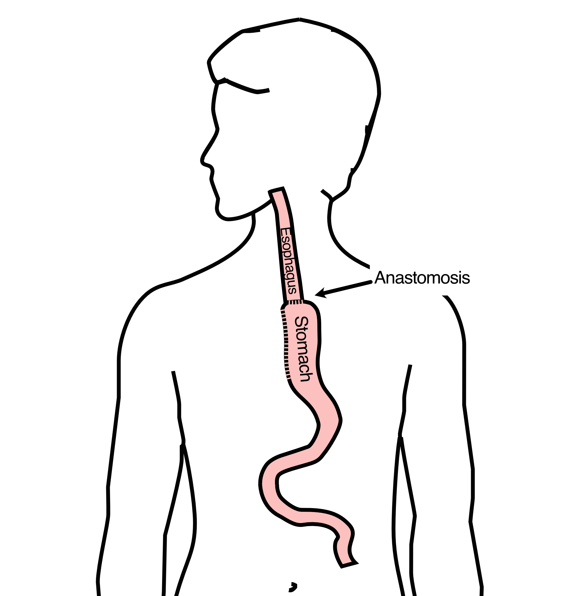
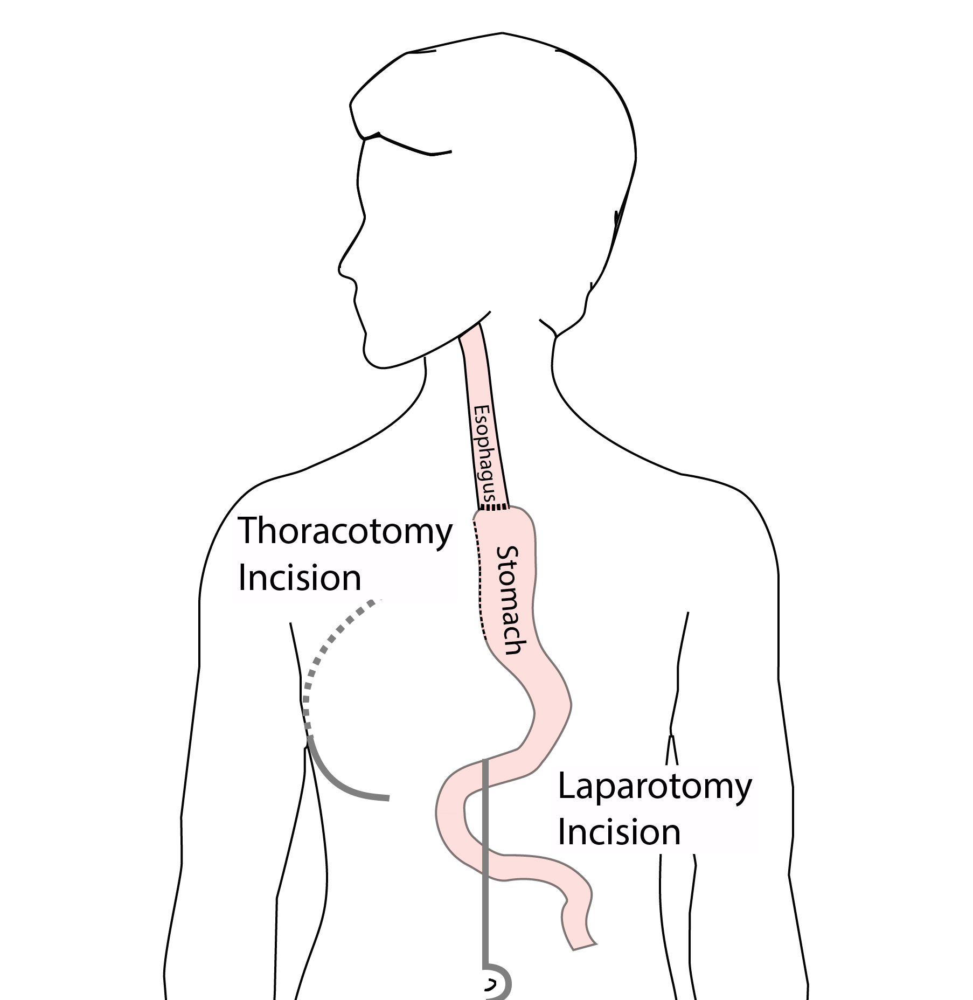
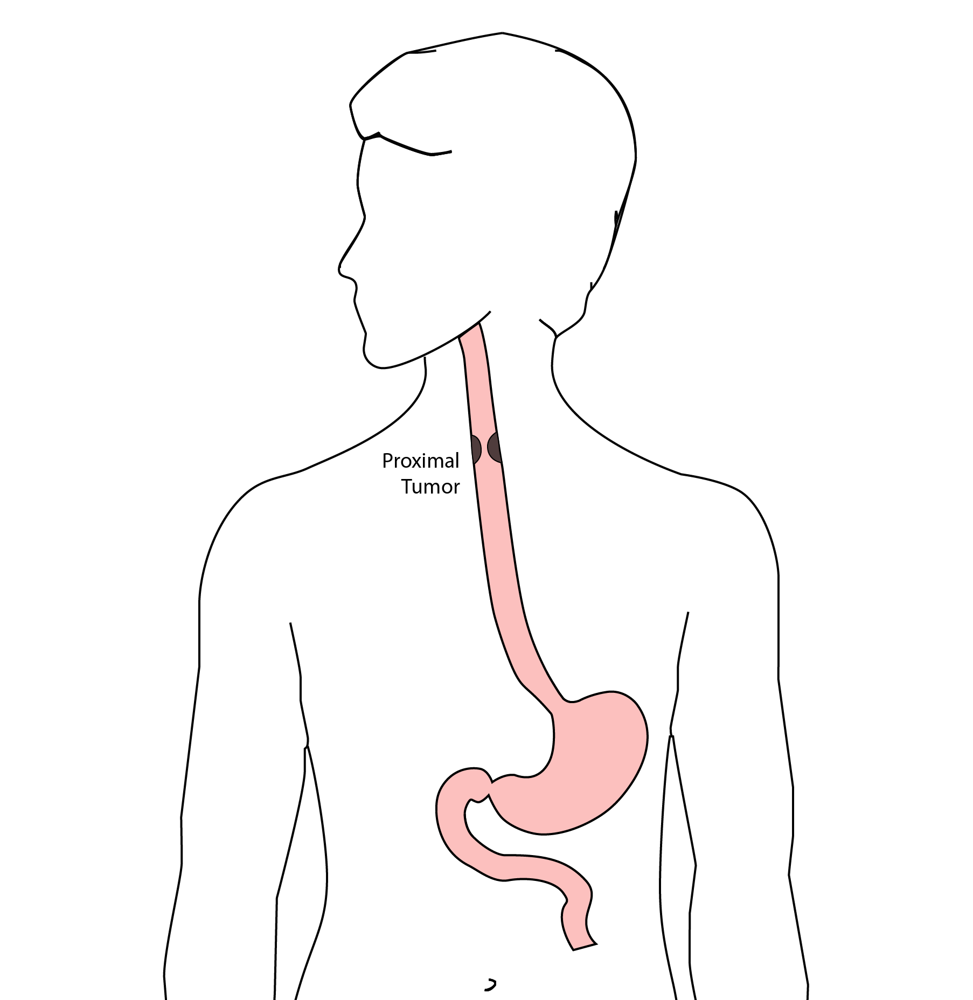
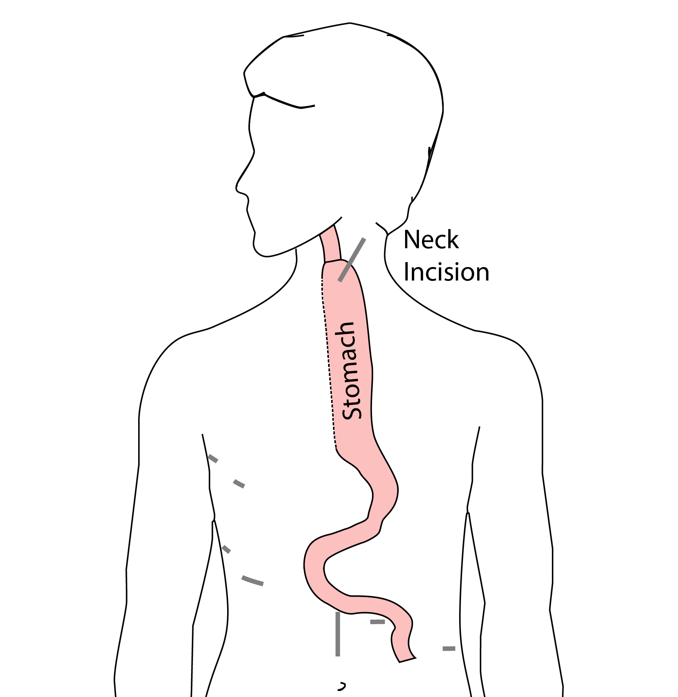

Ignoring unknown labels:
• face : "bold"
• size : "14"
I’m Dr Jonathan Salo, a GI Cancer Surgeon in Charlotte, North Carolina. These videos are designed to educate you about cancer and its treatment and help you and you cancer care team make the right decisions for you.
Of course, there is no substitute for the expert opinions of your cancer care team.
In this video, you will learn about (2)
Surgical removal of the esophagus is referred to as esophagectomy. (3).
Another terms is esophagogastrectomy (4)
Esophagectomy is generally performed for three different situations:
Superficial tumors as T1. If this terminology is not familiar to you, this may be a good time to view our video about Esophageal Cancer Staging and Treatment
We also have a separate video about superficial tumors and how they can be removed through endoscopic therapy without the need for surgery.
Esophagectomy is also performed for
The most common case in which esophagectomy is performed is for locally advanced tumors
We also have a video on locally-advanced cancers which you may find helpful. (7)
In these cases, surgery is performed
The goals of esophagectomy are to remove the tumor (9)
And nearby lymph nodes (10)
A portion of the esophagus and stomach is also removed with the tumor to reduce the risk of recurrence (12)
In moset cases,
The remaining stomach is fashioned into a tube to create a new esophagus (13)
The esophagus and stomach are now joined together
The new connection between esophagus and stomach is called the anastomosis (14)
There are two major types of esophagectomy:
Partial esophagectomy which removed the lower 2/3 of the esophagus
Total esophagectomy removes all of the esophagus (15)
Removes lower 2/3 of esophagus
New connection (or anastomosis) made in the chest (16)
This operation is also referred to as an Ivor Lewis esophagectomy
In honor of the Welsh surgeon who developed the operation (17)
Removes all of esophagus
New connection (or anastomosis) made in the neck (18)
Two different approaches:
Transhiatal approach or
McKeown approach in honor of the Irish surgeon who developed the operation. This is also known as the three-incision esophagectomy (19)
With three different options for surgery, how will you and your surgical team decide which operaiton is best for you?
One factor is the location of the tumor (20)
For tumors located in the lower, or distal part of the esophagus, a Partial esophagectomy will remove all of the cancer with an adequate margin to ensure that the cancer is completely removed (21)
So for distal cancers, an Ivor Lewis Approach is an ideal operation (22)
For tumors located in the upper or proximal part of the esophagus, a total esophagectomy is required to remove all of the cancer.
Another important factor is surgeon preference and experience.
You will have an opportunity to discuss the surgical approach with your surgeon and hear their recommendations for surgical approach
Another aspect of surgery are the techniques used.
An esophagectomy can be performed with open techniques
or minimally-invasive techniques (25)
An open esophagectomy uses a laparotomy incision to access the abdomen, and a thoracotomy to access the chest (26)
Minimally-invasive techniques uses small incisions and specialized instruments.
These techniques can reduce discomfor and length of hospital stay. (27)
Laparoscopic techniques use special instruments to work through small incisions. These are directly controlled by the surgeon. (28)
In some cases, robotic techniques can be used. The surgeon controls the robotic instruments (29)
This can allow for more precision as the surgeon directs the robot (30)
There are three major risks of surgery you will want to discuss with your surgeon
The anastomosis is the new connection made between the esophagus and the stomach.
If the anastomosis does not heal properly. (32)
Fluid from inside the esophagus leaks into the chest cavity. (33)
This can lead to infection (34)
and a prolonged hospital stay (35)
In some cases, small leaks will heal as long as there is adequate nutrition (36)
IN some cases a stent is placed inside the esophagus to patch the leak from the insisde
The stent is a wire mesh tube covered in plastic, which is placed inside the esophagus by endoscopy. (38)
Once healing has occured, the stent is removed, typically about 6 weeks later (39)
Less commonly, a leak may require reoperation (40)
The location of the anastomosis affects the risk of anastomotic leak
In cases of a total esophagetomy, the risk of leak is higher, because the stomach needs to reach higher to make a connection in the neck.
In cases of a parital esophagectomy, the risk of leak is lower.
Once the connection is made between the esophagus and the stomach, we depend upon the body’s ability to heal and strengthen the connection. So the overall health of the patient is important.
Patients who have had poor nutrition are at higher risk of anastomotic leak. (43)
And finally, the experience of the surgical team affects the risk of leak. Hospitals and surgeons who have more experience with esophageal surgery tend to have lower risk of anastomotic leak. (44)
Pneumonia

The Ivor Lewis esophagectomy, shown here, removes the lower 2/3 of the esophagus, the tumor, and the surrounding lymph nodes.

A new esophagus is created from the stomach in the abdomen by fashioning it into a tube.

The new esophagus is now brought up into the chest. A new connection is made between the esophagus and the stomach, called an anastomosis.

Open esophagectomy uses conventional incisions in the abdomen and the right chest. An incision is made between the ribs on the right side, and an abdominal incision made from the breast bone to below the belly button. This is a well-established surgical approach which has been used for the past 75 years.

Mininally-invasive esophagectomy uses small incisions in the abdomen and chest. A surgical telescope and special instruments are used to perform the operations. This operation is a more recent innovation and can be used in many cases instead of an open approach.
The smaller incisions mean faster recovery and less discomfort

We have found this is the best option for most of our patients. In some cases, an open approach is still necessary.

For patients with tumors in the upper esophagus, we need to remove more of the esophagus

For those patients, we need to remove the whole esophagus

In this case, a connection between the esophagus and the stomach is made in the neck.

Another option is a transhiatal esophagectomy, which avoids the need to make incisions in the right chest. The operation is performed from the abdomen and the right neck.

When you meet with your surgeon, you will have an opportunity to discuss your particular situation and their recommendation for surgery. Your surgeon will recommend a surgical approach based upon you and your tumor and their personal experience.
An esophagectomy is a substantial operation, and in some cases there can be postoperative complications. We’re going to talk about two of these complications and what you can do to reduce your risk of complications:
The anastomosis is surigcal connection between the esophagus and the stomach.

If anastomosis does not heal properly, this can cause a leakage of fluid from the esophagus, called an anastomotic leak. If this happens, an infection can occur in the mediastinum, which is the space near the heart between the lungs.

In some cases, the leak will heal on its own, but other cases may require additional procedures or even surgery. The risk of leak depends upon the operation performed but also depends upon the experience of the surgeon. At the end of this video we have a link to a video about how to choose a hospital and a surgeon, which talks further about the risks of a leak.
Pneumonia is another complication which can occurs in about 10-15% of patients after esophagectomy. Pneumonia requires treatment with antibiotics and frequently requires a longer hospitalization.

In normal circumstances, secretions from the mouth and throat aren’t able to enter the lungs because we clear our throat and if secretions do get into our airway, we tend to cough and keep those secretions out of our lungs. This happens constantly without our thinking about it.
After esophagectomy, however, there is a tendency for secretions to enter the airway, and if you can’t clear them, there is a risk that pneumonia will set in.
There are two important ways that pneumonia can be prevented:
After surgery, it’s important to breathe deeply to help your lungs recover after surgery. Deep breathing make the cough more effective and helps clear secretions. After surgery, deep breathing and coughing can be uncomfortable, so controlling your discomfort will be an important part of your recovery.
Walking after surgery is also an important way to help your lungs recover as well. When we walk, it’s easier for our lungs to function, and again, it makes the cough more frequently.
How can we prevent pneumonia? Believe it or not, I can tell who is more likely to develop pneumonia after surgery when I first meet them and shake their hand. Someone with a firm handshake has a lower risk of pneumonia. We think this is because someone with a firm handshake has good muscle tone, and someone with good muscle tone probably has good function of the muscles between the ribs so that they have a nice strong cough and can prevent pneumonia.
In our clinic, we actually measure out patient’s strength with a hand-held strength gauge called a dynamometer. Based upon these measurements, we can identify patients who may be at risk of pneumonia.
About half of our patients have good strength, shown in green. A quarter are have low strength, shown in red Another quarter are in the middle, shown in yellow
Ignoring unknown labels:
• face : "bold"
• size : "14"
Overall, the risk of pneumonia is about 10% in our patients who undergo esophagectomy. 90% of patients never experience pneumonia, but 10% will have pneumonia after surgery.


However the risk of pneumonia is not the same for everyone. Even though the average risk is 10%, the risk is much higher for our patients with low muscle strength and much lower for patients with good muscle strength.
For the half of our patients with good muscle strength, the risk of pneumonia is about 5%. On the other hand, the risk of pneumonia is 20% in the quarter of our patients who have low muscle strength.

The results of our research suggest a simple answer: The risk of pneumonia is related to a patient’s muscle strength.]

Now this doesn’t mean that you need to look like this to prevent pneumonia after your esophagectomy]

The good news is that you can increase your muscle strength before surgery in two very simple ways:
Good nutrition with adequate intake of protein
Exercise
with proper nutrition and exercise, you can increase your muscle strength, and we have good reason to believe this will reduce your risk of complications after esophagectomy.
When you meet with your surgery team, be sure to ask them about pain control after surgery and how you can increase your muscle strength.
In the next video in our series, you will learn about how to choose a hospital and a surgeon for esophageal surgery:
Choosing a Hospital and Surgeon for Esophagectomy
We hope you have found this video helpful. This videos and others like it are designed to
educate patients and families about esophageal cancer
and equip them for their discussions with their esophageal cancer care team.
As always, these videos are no substitute for expert medical advice.
Feel free to leave a comment or a question, or if you have suggestions for future videos.